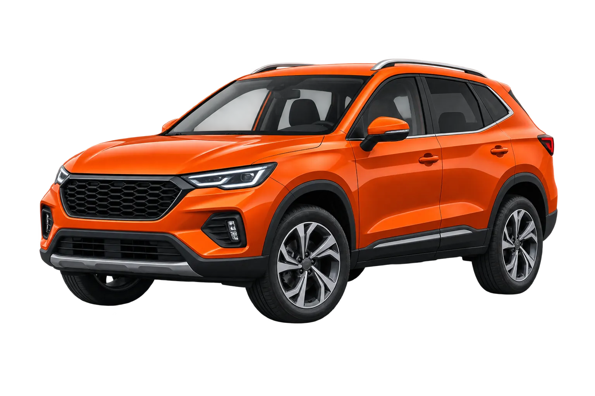

Cuéntanos tu situación
Indica para qué necesitas el coche, cuánto puedes reservar y qué te preocupa.
— VALORADOR INDEPENDIENTE DE COCHES
Responde unas preguntas sencillas sobre tu uso y presupuesto. Recibirás una orientación práctica para saber qué comparar y qué comprobar antes de comprometer tu dinero.
Sin email para ver el resultado · Orientación estimada, no aprobación financiera.

Indica para qué necesitas el coche, cuánto puedes reservar y qué te preocupa.
Verás una categoría, escenarios de coste y lo que todavía necesitas comprobar.
Consulta el resultado y conserva una guía clara para comparar y comprobar.
Tu informe personalizado
Recibirás una guía práctica adaptada a tu uso, tu presupuesto y tus prioridades. No necesitas ser mecánico: sigue el orden y apunta lo que no puedas confirmar.
Una categoría y una orientación de uso para empezar a mirar anuncios con un criterio concreto.
Separaremos el precio del coche de seguro, trámites, puesta a punto y reserva para imprevistos.
Conocerás qué documentación pedir, qué preguntas hacer y cuándo conviene frenar la operación.
Recibirás una acción clara: comparar anuncios, valorar tu coche o solicitar una revisión independiente.
Antes de mirar anuncios
Una decisión tranquila empieza por conocer tus prioridades, tu margen y las comprobaciones que no debes saltarte.
Comprar ocasión sin ir a ciegas
La duda no suele ser encontrar coches. Es saber cuál puedes mantener, qué riesgo estás asumiendo y qué comprobar antes de pagar.
Te ayudamos a traducir tu rutina en una categoría y unas prioridades concretas.
Separamos compra, gastos iniciales y reserva para que puedas decidir con margen.
Recibes un checklist adaptado a tu búsqueda y una forma sencilla de anotar lo que sigue pendiente.
Para tu vida real
El informe te ayuda a comprobar espacio, uso, costes y cambios previsibles antes de enamorarte de un anuncio.
Respuestas antes de empezar
Hemos reunido las preguntas que más pesan antes de decidir para que sepas qué puede resolver el informe y qué tendrás que verificar por tu cuenta.
No elige una unidad concreta. Te orienta sobre la categoría, el uso y las prioridades que encajan contigo para que puedas comparar anuncios con mejor criterio.
Separa el precio del vehículo de trámites, seguro, puesta a punto y reserva. También señala qué documentación pedir y cuándo conviene abandonar una operación.
Sí. El diagnóstico parte de tu rutina, no de que conozcas marcas o motores. El resultado traduce tus respuestas en prioridades sencillas y preguntas para el vendedor.
El informe adapta sus focos: espacio y cambios previsibles, o coste por kilómetro, carga, disponibilidad y tiempo de parada si el coche forma parte de tu trabajo.
No sin comprobarlo. CocheCierto identifica la información que falta, pero una revisión física e inspección profesional siguen siendo necesarias cuando la operación lo justifique.
No. Es orientación para decidir. Cualquier precio es orientativo y cualquier financiación debe revisarse con la entidad correspondiente.
Una orientación que parte de tu situación
Prioriza manejo sencillo, seguro asumible y una compra que no te deje sin colchón.
Calcula cuánto reservar para mantener el coche, no solo cuánto cuesta comprarlo.
Crear mi valoración →Valora plazas, maletero y los cambios previsibles de los próximos años.
Considera coste por kilómetro, carga, disponibilidad y coste de una parada.
Antes de dejar tus datos
Consulta una muestra del resultado para saber qué información recibirás.